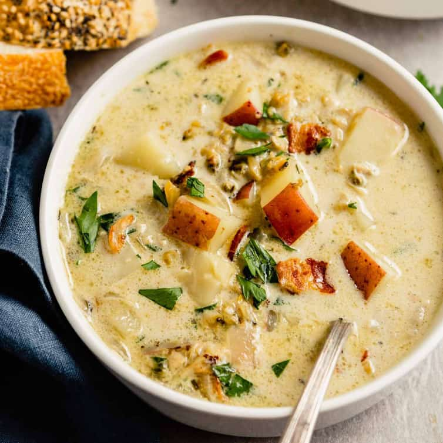
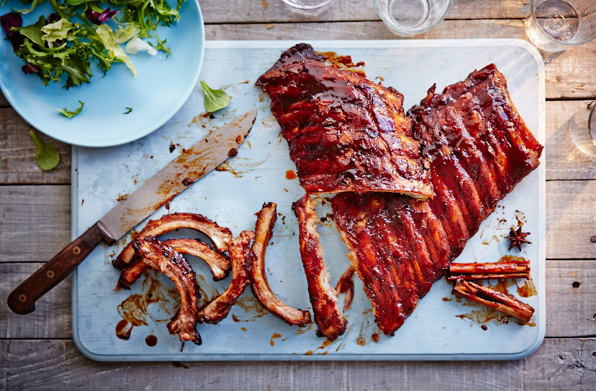
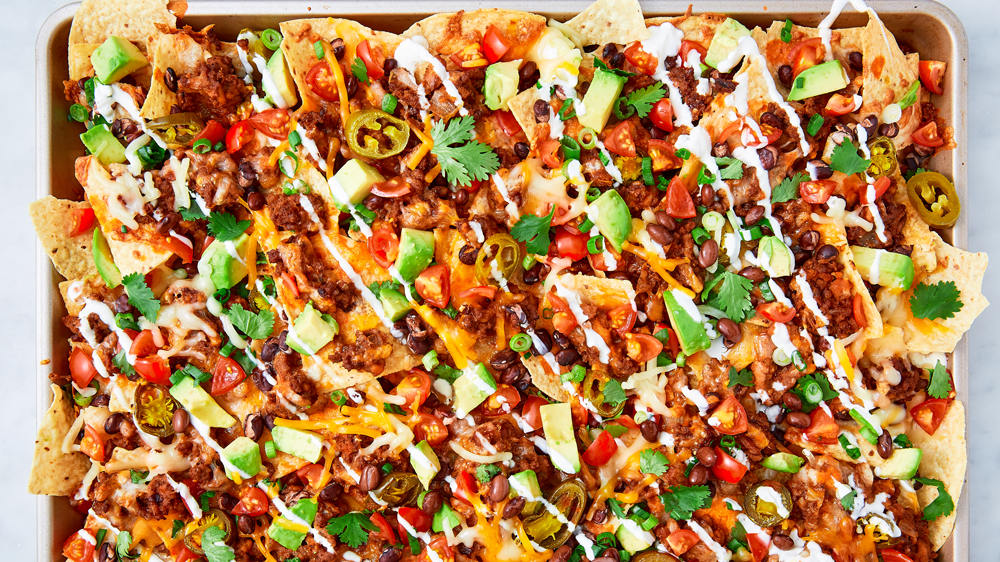
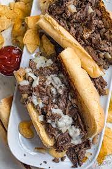
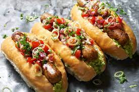

Meatloaf

Meatloaf is an American dish which consists of ground meat, breadcrumbs and
seasoning, which is then put into the shape of a bread loaf and then baked in the oven.
New England Clam Chowder

New England Clam Chowder is an American milk or cream based thick soup or stew
made of clams, fish,
or vegetables, with potatoes, onions, & other ingredients and seasonings.
Buffalo Wings

Buffalo wings are a classic American dish which consists of chicken wings or
thighs coated with a hot sauce mixed with butter that are then deep fried.
Barbecue Ribs

An American dish that is either beef or pork ribs that are cooked at a low
heat for a long period of time to make them tender. Usually covered in a sauce before cooking to flavour them.
Apple Pie

Applie pie is a classic American dessert which is an apple baked in pastry pie
that is usually topped with whipped cream and a caramel sauce. It is then usually paired with ice cream and/or custard.
Nachos

Nachos is an American dish which is a tortilla chip covered in multiple
different toppings such as melted cheese, hot peppers, ground beef, chicken, steak, guacamole, and sour cream.
Philly Cheese Steak

This is an American meal originally from philadelphia which is a sandwich made
with super thinly sliced ribeye steak, caramelized onion, and provolone cheese.
Hot Dogs

This is an American dish which is a whole sausage that is skinless in a sliced
bun. Usually topped with fried onions, tomato ketchup and mustard.
Cheeseburger

This is a hamburger which is topped with cheese in a seeded bun. Ususally
includes other toppings like, tomatoes, lettuce, onions, and bacon.
< >